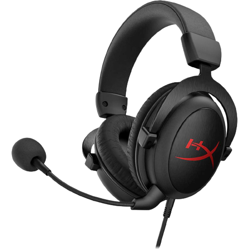
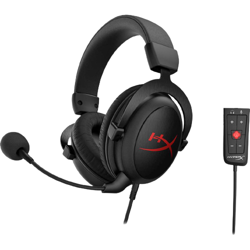
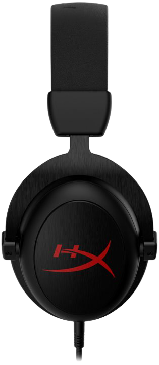
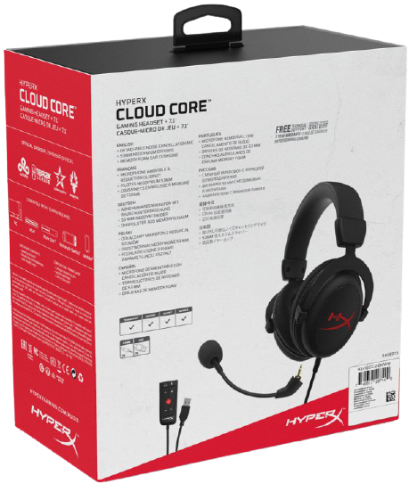

Навушники HyperX Cloud Core + 7.1 Black
2 499 ₴
Опис товару:
HyperX Cloud Core з віртуальним 7.1-канальним об'ємним звуком1 забезпечує чітке позиціонування джерел звуку, роблячи ігрового процес ще більш захоплюючим. Гарнітура оснащена фірмовою піною з пам'яттю форми HyperX і м'яким шкірзамінником, що додають комфорт в тривалих ігрових сесіях. Мікрофон з функцією шумозаглушення не дозволяє оточуючих звуків заважати голосовим переговорів і, коли він не використовується, його можна зняти. Гарнітури HyperX Cloud, що славляться своїм легендарним звуком, комфортом і довговічністю, оптимізовані під ігровий стиль.
Характеристика товару:
- Підсвітка — ні
- Частотний діапазон — 15-25000 Гц
- Опір — 60 Ом
- Довжина кабелю — 1 м основний + 2 м подовжувач для комп'ютера
- Тип підключення навушників — Провідні
- Тип навушників — Повнорозмірні накладні
- Тип чашки навушників — Закриті
- Матеріал амбушур — Кожзам
- Роз'єм — 2 * 3,5 мм 3 pin, 3,5 мм 4 pin
- Додаткові особливості навушників — Серія гарнітури HyperX Cloud Core
- Частотний діапазон — 50-18000 Гц
- Спрямованість мікрофона — Всеспрямований
- Чутливість мікрофона — 105 дБ
- Тип мікрофону — Сумний
Додаткові данні
| Гарантія виробника | Гарантія магазину | Оригінальний |
|---|---|---|
| Так | Так | Так |